Las del servicio
My Final Degree Project explored the feminization of domestic care work, its undervaluation, and the important role played by migrant women in the sector. The project aimed to raise awareness of this issue and bring it to a wider audience. Winner of a Silver ADCV Award in the Student Category.
- Editorial Design
- Final Degree Project
- Social Design
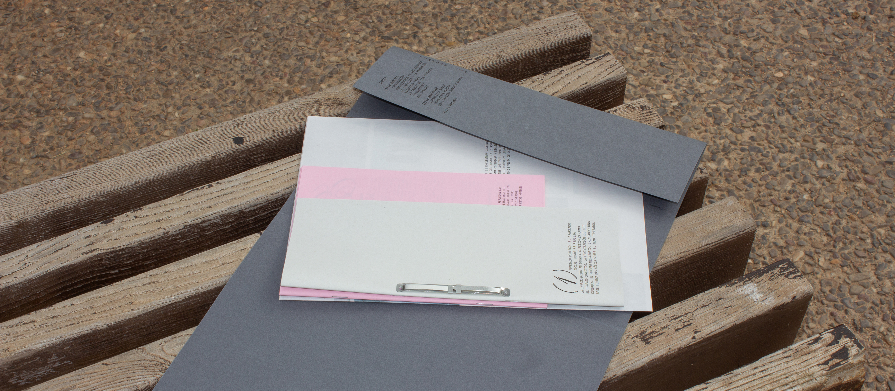
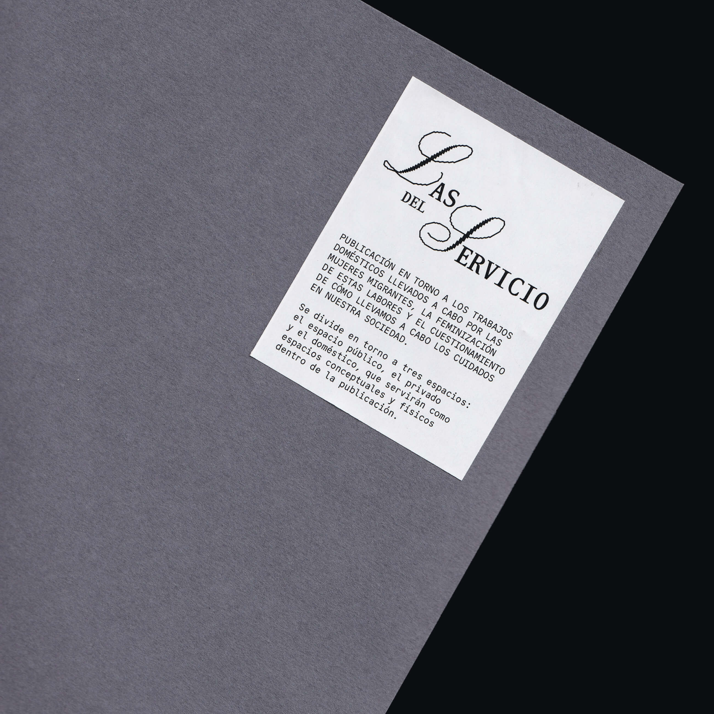
Investigation
The project was developed through extensive research using different methodologies, including a literature review, surveys with our target audience and most importantly: interviews with migrant women. Their testimonies became a key part of the publication, exploring personal experiences related to migration, domestic work, motherhood and the challenges of starting a new life abroad.
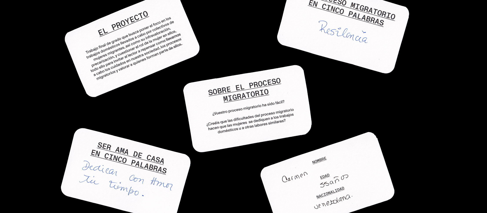
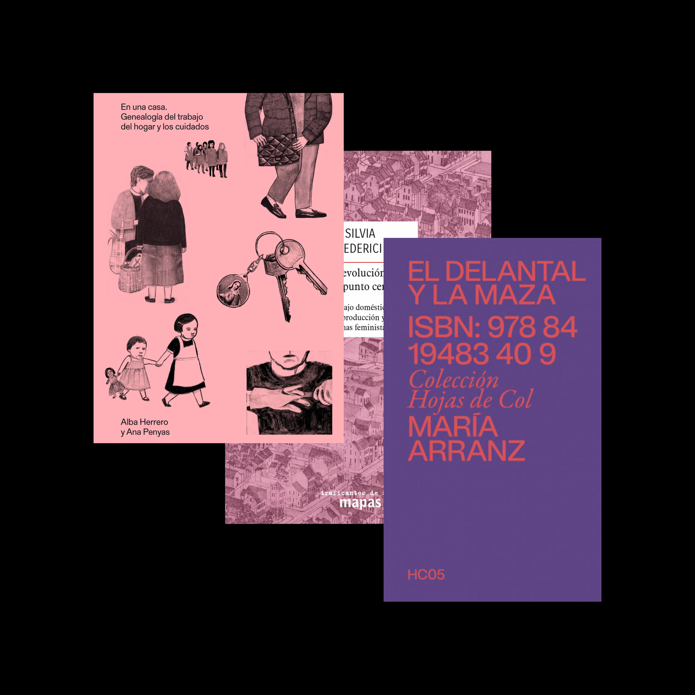
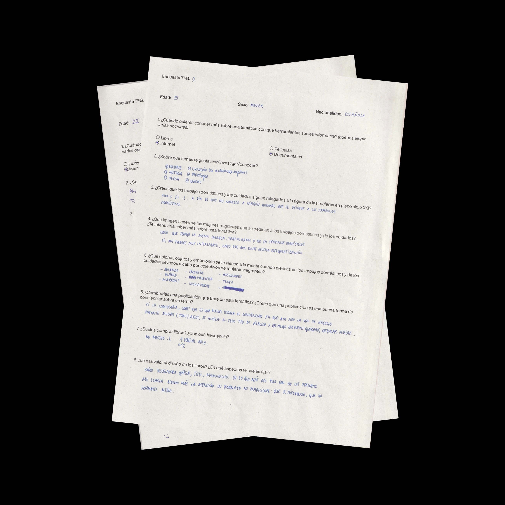
Conceptualization
The publication is structured around two main axes: a conceptual one, where spaces as shapers of identity—public, private, and domestic—divide the publication into three sections; and a visual one, which draws on archival materials and references to migration and bureaucratic processes to reflect the experiences many migrant women encounter throughout their migration journey.
The central section, which features interviews with women working in the domestic sector, is printed on pink paper to emphasise the sector’s highly feminised nature. It also includes a fold-out featuring analogue photographs of domestic spaces, aiming to bring these practices out of the private sphere and into the public realm, taking them out of their usual context.
Solution
The final outcome takes the form of a publication divided into three sections and compiled in a folder: the public, which presents research on domestic work, migration, and the feminization of care; the domestic, which brings together interviews with migrant women as a collective narrative of their experiences; and the private, which presents photographs of everyday spaces and objects within the home, decontextualizing domestic practices. The publication is complemented by a fictional communication campaign for its launch, including social media content and postcard-format invitations.
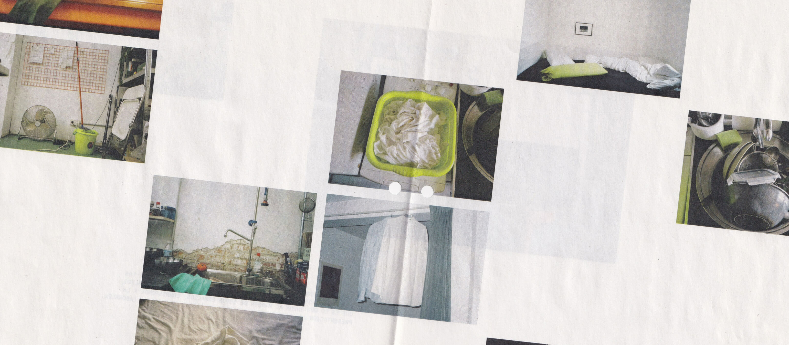
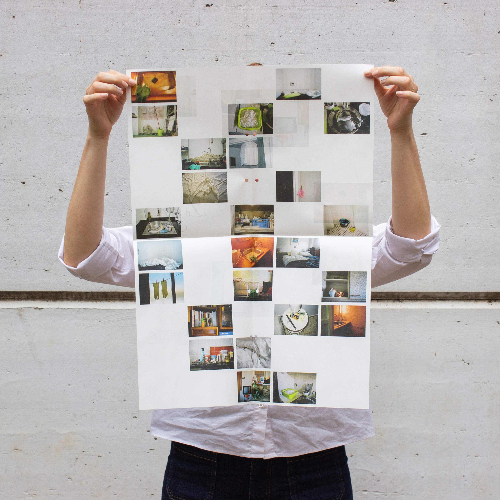
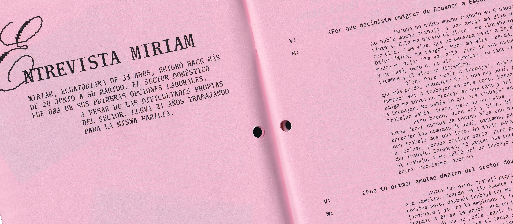
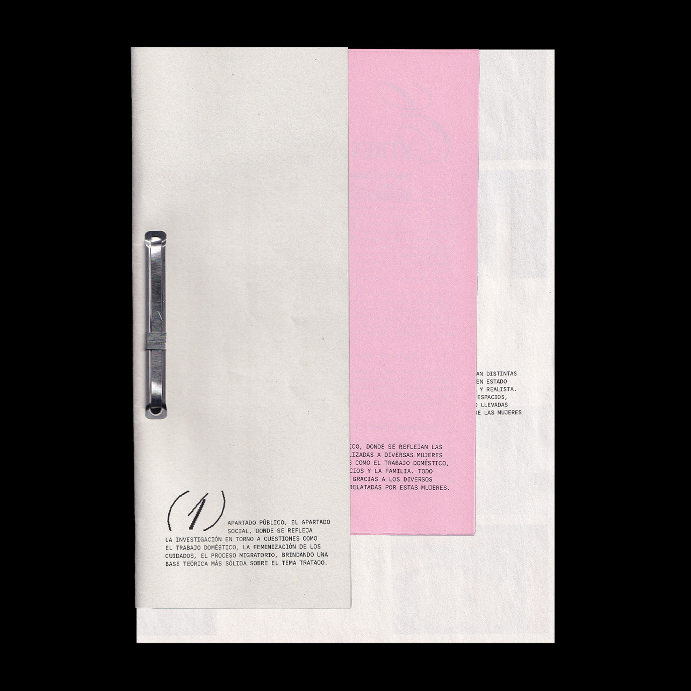
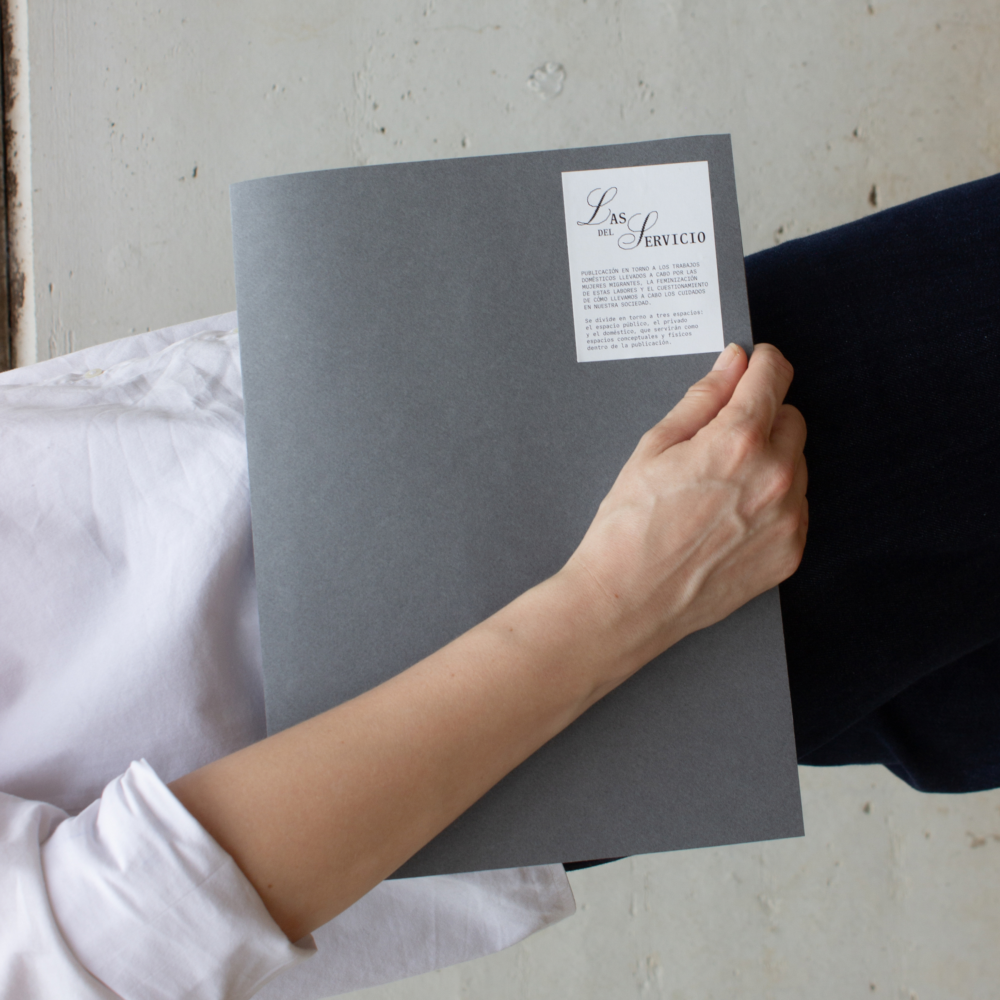
Outcome
Proud and grateful to have received an ADCV Silver Award 2026 in the Student category for my Final Degree Project.
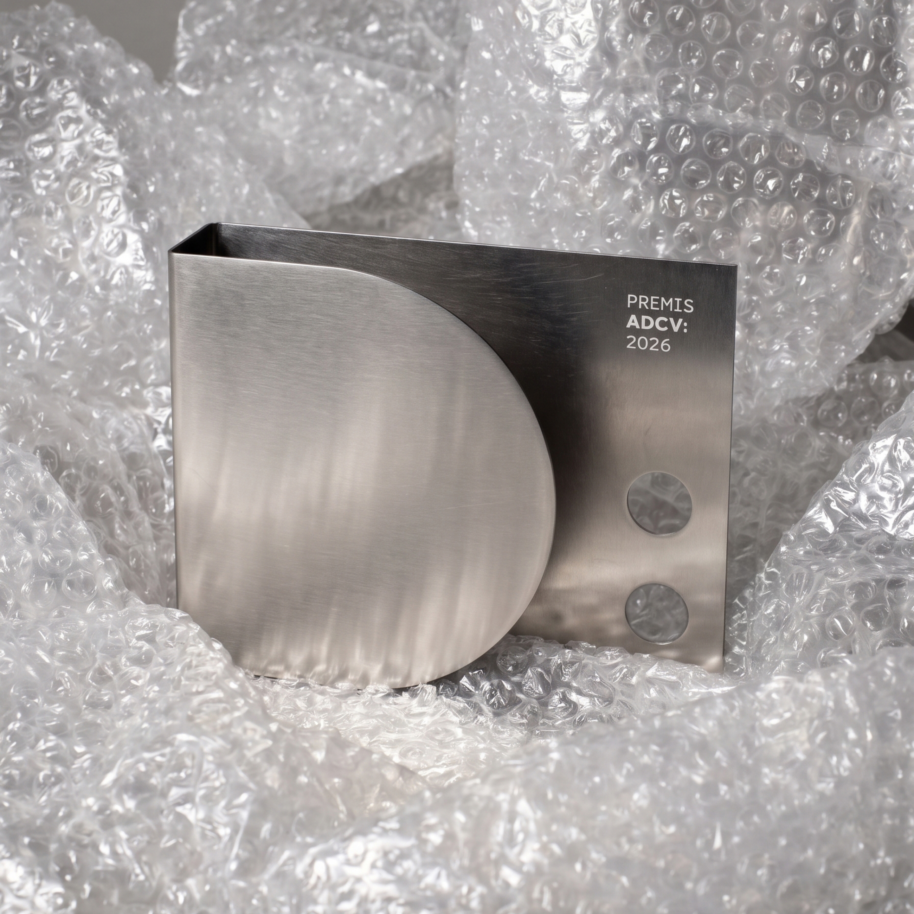
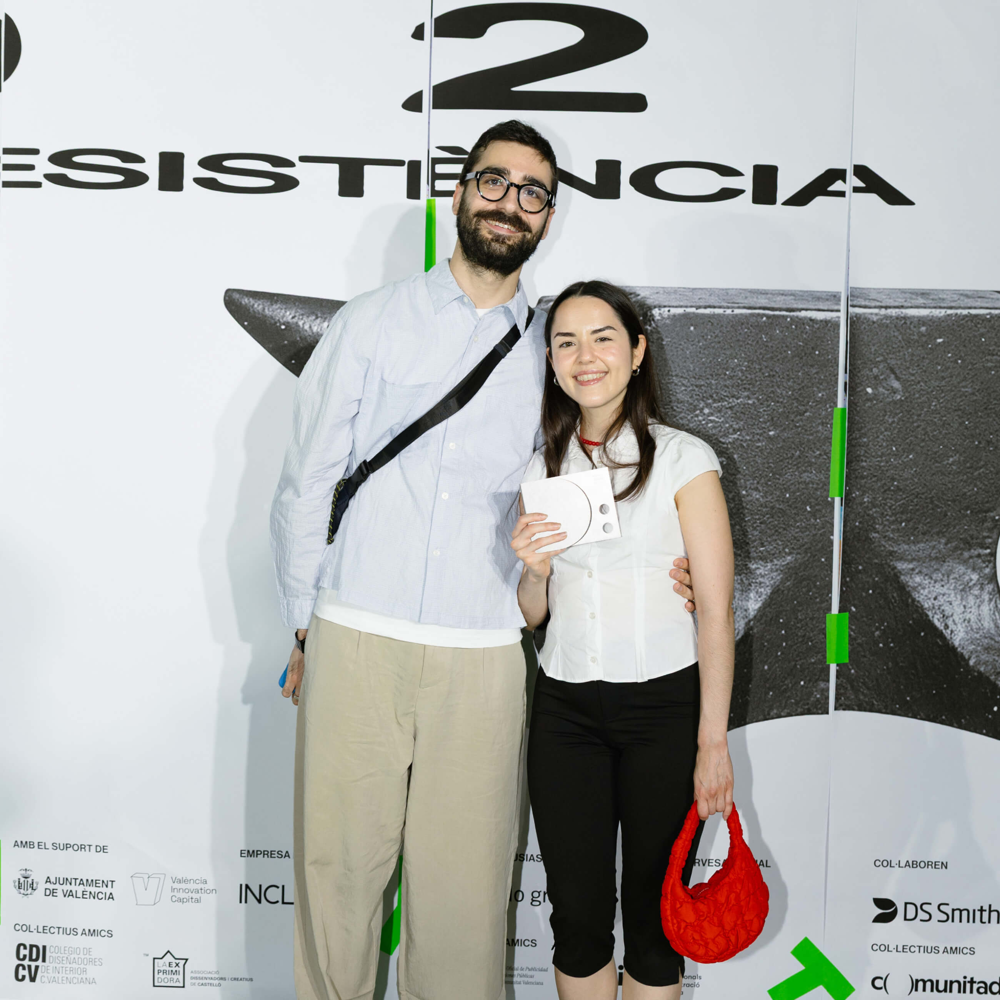
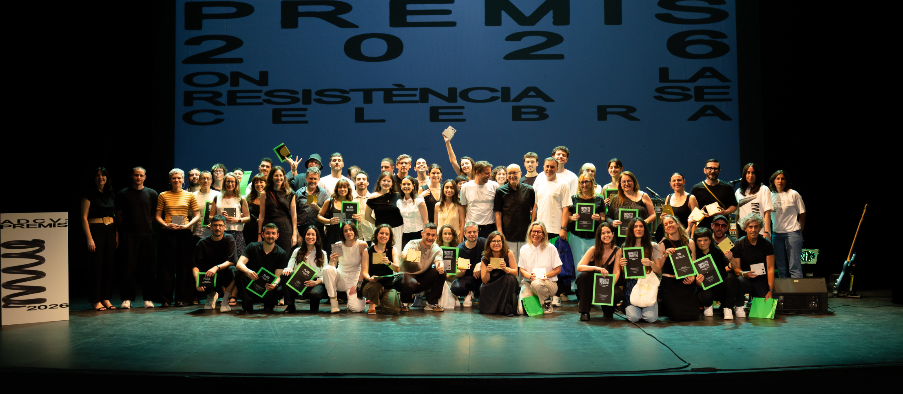